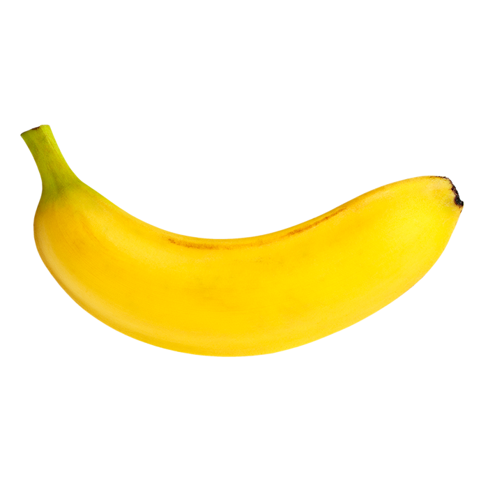

<!DOCTYPE html>
<html lang="en">
<head>
    <meta charset="UTF-8">
    <meta http-equiv="X-UA-Compatible" content="IE=edge">
    <meta name="viewport" content="width=device-width, initial-scale=1.0">
    <title>Document</title>
</head>
<body>
    <script>
/*
La bodega “el Lugar de la Fruta”, nos solicita realizar un programa para que al ingresar el nombre de una fruta nos muestre sus propiedades y la imagen de dicha fruta. Suficiente con 4 frutas que sean de su agrado.
*/
var fruit;
fruit=prompt("Ingresar nombre de fruta");
switch (fruit.toUpperCase()) {
    case "MANZANA": 
    document.write(" Es una fruta pomácea de forma redonda y sabor muy dulce, dependiendo de la variedad"+"<br>");
    document.write(""); break;
    case "PLATANO": 
    document.write("Es una fruta comestible alargada, botánicamente una baya, producida por varios tipos de grandes plantas herbáceas con flores del género Musa"+"<br>");
    document.write(""); break;
    case "FRESA": 
    document.write("Es un fruto de color rojo brillante, suculento y fragante que se obtiene de la planta que recibe su mismo nombre. En Occidente es considerada la 'reina de las frutas'.<br>")
    document.write(""); break;
    case "PIÑA": 
    document.write("Es una fruta muy apreciada por su exquisito sabor y delicado aroma, que además sorprende por unas afamadas virtudes terapéuticas, algunas de las cuales están aún por demostrar.<br>")
    document.write(""); break;
}
    </script>
</body>
</html>